接上期：
四、16位时代——图形界面与PC兼容机
上期说到，在80年代最开始的几年，个人电脑市场形成了IBM PC，苹果II，和Commodore64三足鼎立的形势。那么，最后是谁笑到了最后呢？
80年代中期，主导市场的仍然是这三个厂商，只不过，销售的产品从8位处理器进化到了16位处理器，交互方式也从DOS这样的命令行变为了图形操作系统。
1983年初，苹果推出了以乔布斯女儿命名的Lisa个人电脑。与之前Apple III电脑相比Apple II很有限的提升不同，Lisa从技术层面上来说是一款划时代的电脑。它不但是第一款采用了16/32位混合型CPU——摩托罗拉68000的个人电脑，也是第一款内置图形操作系统、使用鼠标操作的电脑。其他的内存保护，协作式多任务处理，基于硬盘的操作系统等等技术特点也都是革命性的。但是很显然，高达1万美元的售价甚至已经超过了很多小型机，让这款电脑注定与大众无缘。Lisa最终只卖出了10万台，虽然相比与它的售价已经很难得，但对社会的影响就谈不上有多重要了。
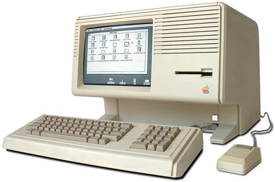
就在一年以后，一款真正改变世界的产品——Macintosh（麦金塔）问世了。在乔布斯被踢出Lisa项目以后，他就将全部精力投入到了这款电脑的研发中去。作为整个Mac系列的第一款产品，Macintosh 128K在硬件和软件方面都有接近Lisa的巨大优势，同时售价要亲民的多。整套系统包含显示器、软驱、鼠标和键盘在内只要2500美元（合今天的6000美元）。而简洁的设计也比Lisa要出彩的多。虽然这款电脑的内存只有128KB，CPU主频只有6MHZ，甚至不及现代智能手机的千分之一，但它能够提供的功能和用户体验已经相当接近今天的电脑。而512x342像素以及丰富的软件也使得电子化出版开始成为可能。这之后在没有乔布斯的苹果逐渐走向下坡路的年代，Mac仍然能够保持一定的市场份额，靠的就是初代Mac积累的大量出版从业人员和设计师用户。
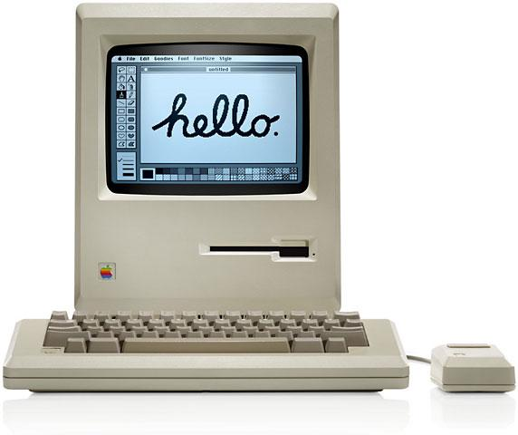
Mac 128k上市时，苹果制作的电视广告《1984》，也是整个广告史上的经典之作。1984年既是Mac推出的年份，又是知名科幻小说的名字。原本有可能桎梏人类社会的铁幕，就在这一年被苹果通过一场技术革命砸碎了。
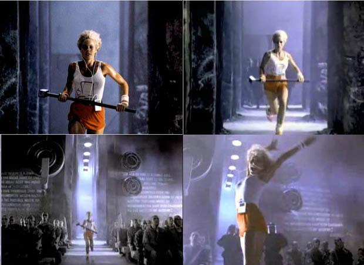
伴随初代Mac面世的，是一直使用到2001年的经典Mac操作系统。虽然Mac图形操作系统的理念来自于Xerox公司的产品，但这个系统变得真正好用，却依赖于苹果工程师许许多多的改进。相比之下，早期的Windows对Mac的操作系统则几乎可以说是抄袭了。
初代Mac OS
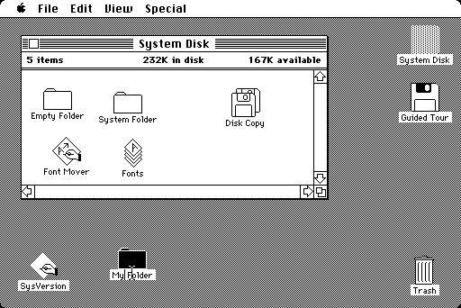
Xerox Alto的图形操作界面
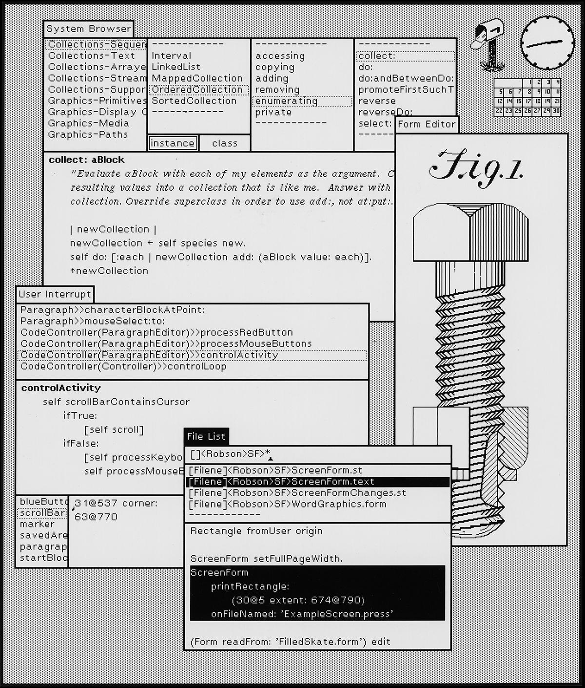
同一年，IBM也推出了第二代个人计算机产品PC/AT。尽管IBM PC一直使用16位的寄存器，但PC/AT之后，总线才从8位变为16位。PC/AT本身售价昂贵，高达6000美元，虽然后来价格有所下降，也仍然要2000多美元，因此并没有获得太大的销量。但它却是后来大行其道的PC兼容机最广泛使用的标准。
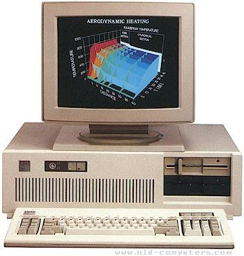
1985年，微软也为PC和PC兼容机提供了图形操作系统——Windows 1.0。虽然PC/AT的彩色显示屏比Mac的黑白屏提供了更大的潜力，但第一代Windows看起来就像是Mac操作系统拙劣的仿制品。Windows真正发展成一款成功的操作系统，要等到5年后的3.0版本了。
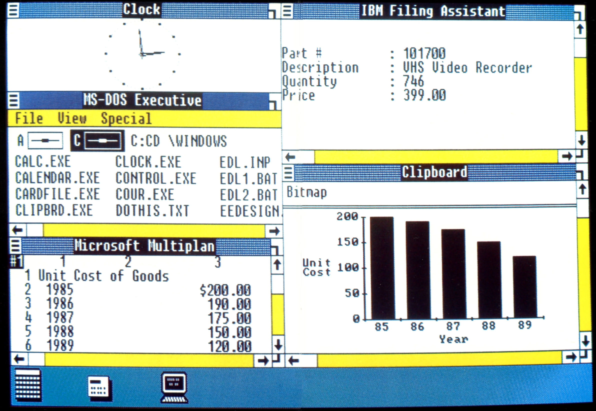
Commodore公司的第一款16位计算机产品Amiga也在1985年问世。跟Mac 128k一样，它也采用了摩托罗拉68000这款CPU，也同样提供了图形操作系统（Amiga OS，另一个Mac OS的抄袭者）和鼠标，但设计上仍然延续了C64的传统，整合了键盘的主机非常轻便，同时连接电视进行显示，因此售价十分低廉，只要1300美元。
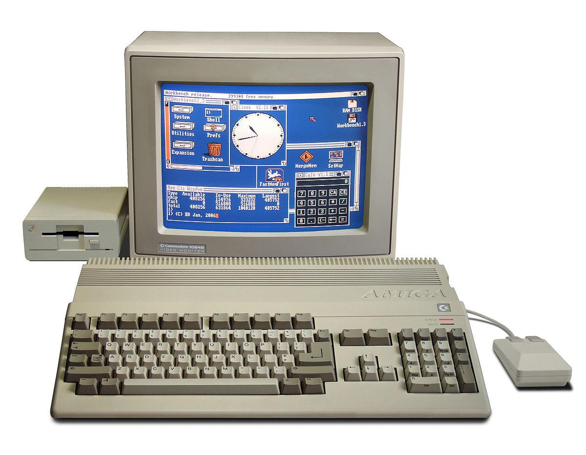
在8位机时代通过整合游戏机功能开辟一条新路的雅达利也推出了自己的16位产品。雅达利ST的主机跟Amiga类似，也是跟键盘整合在一起，不过显示器则包含在系统当中，搭配黑白显示器的版本售价800美元，搭配彩色显示器的则售价1000美元，是当时最便宜的次世代电脑。它采用的图形操作系统是DRI公司开发的GEM（图形环境管理器），跟早期的Windows实际上运行在DOS上一样，也需要底层操作系统TOS的支持。
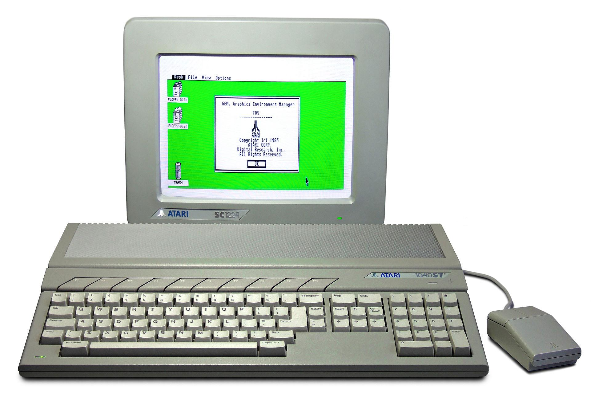
不过，这两款电脑因为性能不及PC和Mac，在美国实际上都并不算很流行，主要的市场反而在欧洲。以Amiga为例，总共450万台的销量中，大概有150万台在英国，另外150万台在德国。
Amiga在英国的宣传页
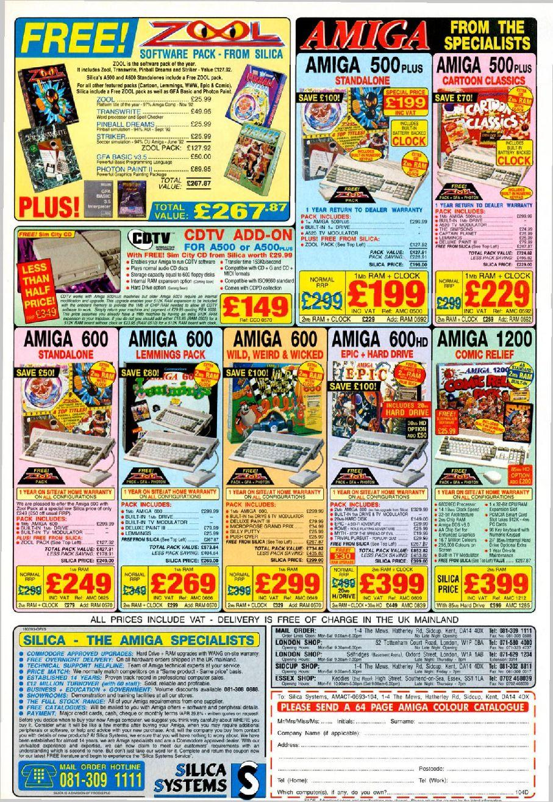
相比于主打高端用户的PC/AT和Mac，中端定位的Amiga和ST价格当然要亲民的多。但即使是最便宜的雅达利 ST，800美元的售价也已经相当于今天的1818美元（12400人民币）。大量的工薪阶层家庭仍然在购买只要150美元的C64。虽然Commodore公司自身希望需要GUI的消费者去购买更贵的Amiga，但庞大的市场却挡不住第三方软件商为C64开发图形操作系统。其中最流行的第三方操作系统是GEOS。与GEM一样，GEOS也是一个跨平台系统，也有运行在PC机和苹果II上面的版本，后来还成为诺基亚第一款智能手机的操作系统。
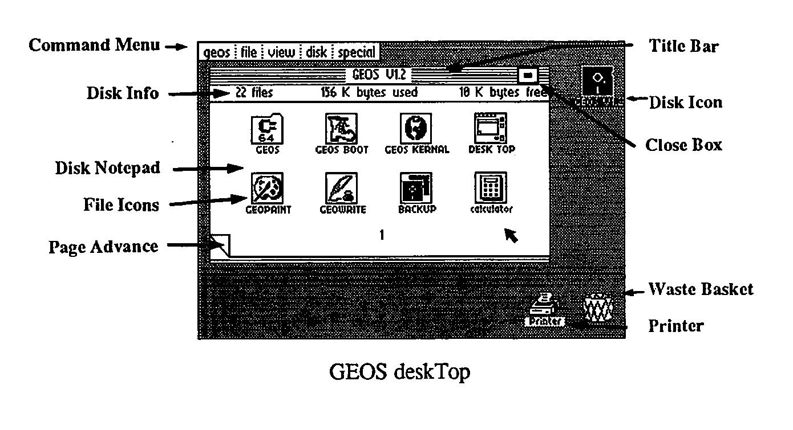
1986年，随着GUI在中端产品上的普及，苹果也推出了搭载图形操作系统GS/OS的苹果IIGS
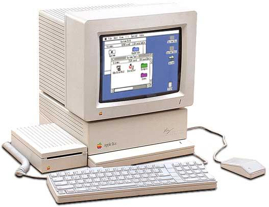
尽管几大厂商都不遗余力的更新产品，但历史仿佛跟我们开了个玩笑，这场家用电脑市场大战最后的胜出者其实根本不来自于任何一方，而是新涌现的大量PC兼容机厂商。
抢走IBM饭碗的PC兼容机，其实源于IBM PC自己的一个提高效率和通用性的设计思路，即要求软件开发时调用标准的BIOS（基本输入输出系统）接口，而不是直接调用硬件。如此一来，即使硬件不同，只要采用同一BIOS就可以共用软件。与此同时，因为美国的版权法允许所谓的“净室设计”，即只要逆向工程得到的源代码不被直接用于新产品开发，而是利用逆向工程总结出的技术文档重新编写代码，就不属于侵权。这就使得小厂商可以复制IBM PC机的BIOS，自行搭配硬件，生产兼容PC软件的低成本电脑成为可能。
在这之前，小厂自行研发计算机不但难度很大，而且即使开发出来，因为销售规模不够，才不会有足够的第三方软件，而小厂自己又没有能力开发软件，就导致产品因为缺乏软件而完全没有竞争力。但现在可以搭上为庞大的IBM PC软件库的便车，就再也不存在障碍了。
1983年，新成立的康柏公司就使用这种方法，第一个造出了完全兼容IBM PC机的产品，Compaq Portable。
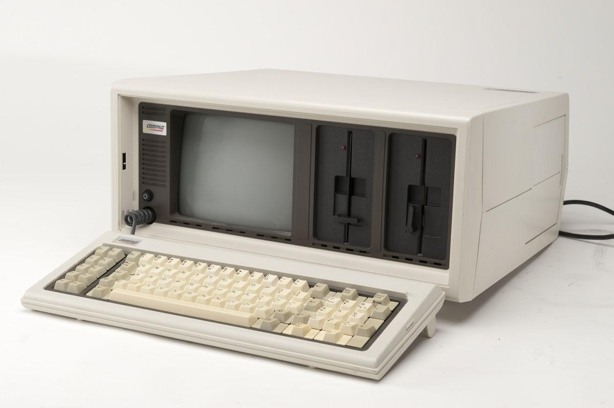
Compact Portable的售价仍然要3000美元，其实并不比IBM PC便宜，只是体积要更小一些。但这个口子一开，许许多多的杂牌厂商涌入计算机制造业，在性能上和成本上都大大超过了IBM。
在高端领域与IBM竞争的主要就是康柏。1986年，康柏推出了Deskpro386，领先于IBM采用了32位处理器因特尔80386，售价3300美元。比IBM PC系列更强劲的性能使得它抢占了大批办公市场，也帮助康柏在当年实现了市场份额超越IBM。
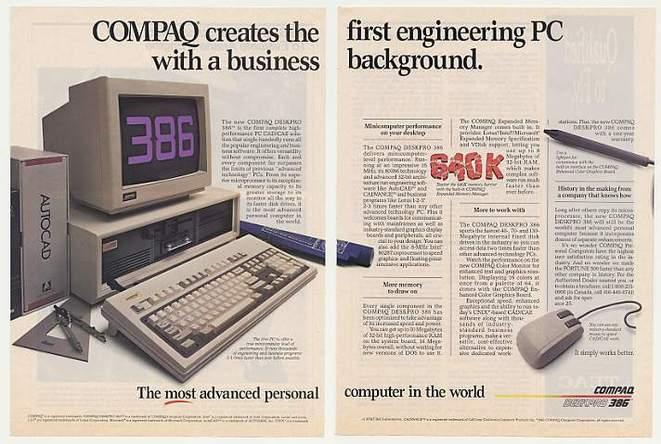
1984年，戴尔公司推出了仅售800美元的Turbo PC。它的价格只相当于一台中端电脑，但却能够享受到近似高端电脑的性能和软件库，上市第一年就卖出了近10万台。这之后的几年里戴尔逐渐积累了更大的市场声誉。到1990年以后，原本在中端领域活跃的Commodore和雅达利的市场份额几乎都被以戴尔为首的新兴厂商抢完，接连走上了倒闭的道路。
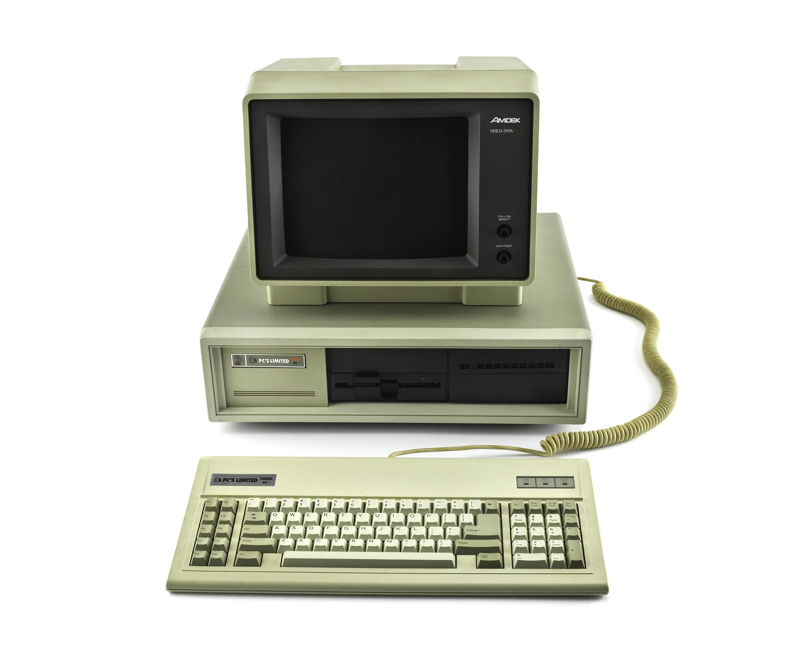
1987年，试图亡羊补牢的IBM推出了采用不兼容的总线标准的第三代个人计算机PS/2，但讽刺的是，这个选择却使得IBM自己被淘汰出了个人计算机市场。
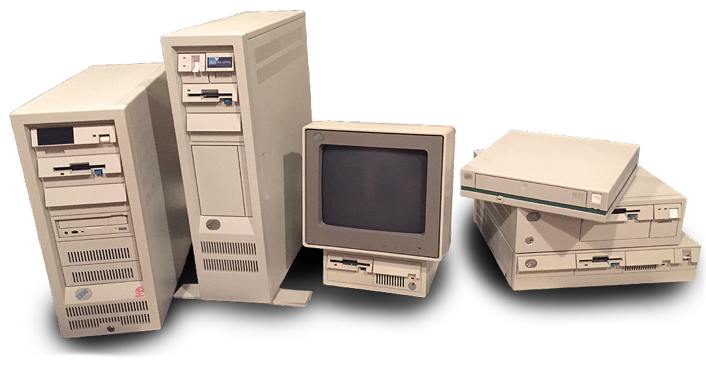
整个90年代，最早开创了PC机的IBM公司已经对于计算机市场没有任何话语权。厂商看重的只是x86 CPU和Windows操作系统，微软和英特尔变成了市场的主宰者。而原本百花齐放的家用电脑市场，也就此告一段落。
五、欧洲和日本的个人电脑
像很多领域一样，1980年代的世界远没有今天这么一体化。同样属于发达地区的欧洲和日本在80年代初也开始普及个人电脑，但流行的产品却与美国不尽相同。
美国兴起的个人电脑风潮最先传到的是英国。除了英国与美国本身的密切联系以外，英国盛行的DIY文化也使得有更多的消费者愿意自己学习编程，大大扩展了电脑的应用。
不过，以Apple II和IBM PC为代表的美国家用电脑售价大都在800美元以上，TRS-80，雅达利400和C64虽然相对便宜（他们也是在欧洲最成功的美国家用电脑），也要300-400美元，在电脑的功能还没有那么丰富的年代，对于不那么富裕的其他西方国家来说，显然还是太贵了。个人电脑要在这些地方流行起来，首先需要有更便宜的产品。80年代初的英国工业虽然已经黯淡了不少，但还没有经历撒切尔夫人“去工业化”政策的彻底摧残，在计算机等高精尖领域仍然领先于德国、法国、日本和意大利。再加上英国电脑消费的需求产生较早，最早的低成本电脑产生于英国，也就是理所应当的了。
1981年，位于剑桥的科技创业公司Acorn为英国国企BBC提出的“computer literacy program”（计算机教育普及项目）推出了产品BBC Micro。跟苹果II一样，它采用了8位处理器MOS6502。内存则达到了16-32KB，比苹果II大得多。这款电脑售价为235英镑，也就是470美元，跟美国的TRS相仿。但因为教育机构购买的话，英国政府会补贴一半的价格，所以很多英国学校都采购了这款产品。到1994年停产为止，它一共生产了150万台。
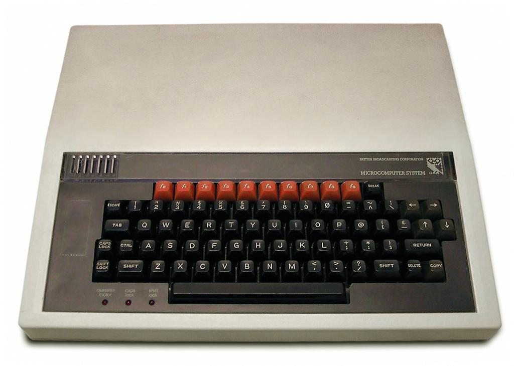
第一款真正在家庭市场获得成功的英国电脑产品则是Sinclair公司推出的ZX 81。早在一年前，Sinclair公司就曾推出了售价100英镑的ZX80。ZX81略微增强了性能，但最主要是优化了设计使得成本更低，仅售70英镑。为了进一步降低价格，ZX81还提供了需要顾客自己组装的散件版本，仅售50英镑（相当于100美元，也就是今天的270美元，1830人民币），这个价格就实在太亲民了。因此，不仅ZX81在英国相当成功，而且还出口到西欧其他国家，甚至是东欧和苏联。在美国，它也以Sinclair 1000的名字销售，但因为内置软件太少，而美国消费者并不喜欢自己学习编程，因此主要是在前文提到的Commodore和德州仪器的价格战中作为以旧换新的工具销售。
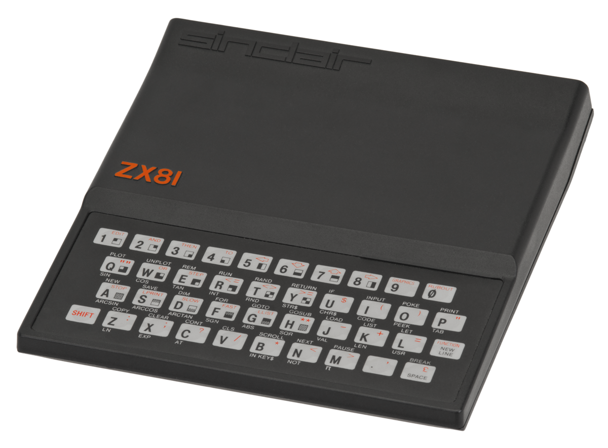
1982年，Sinclair公司由继续推出了升级产品ZX Spectrum，售价125英镑。
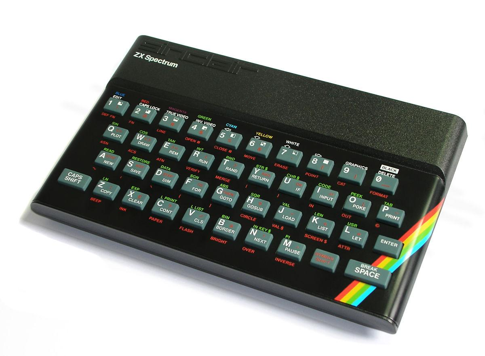
ZX81和ZX Spectrum分别卖出了150万台和500万台，但同时这两款产品在东欧、苏联、南美和香港都生产了不少仿制品。甚至还在广州组装生产。
1984，随着英国的个人电脑需求另一家英国电脑厂商Amstrad推出了定位相对高端的产品Amstrad CPC，售价300英镑（合400美元，在美国只能算低端产品）。跟Commodore 128和TRS-80一样，它能够运行CP/M操作系统，因此有庞大的软件库，就不必由用户自己编程了。这款产品在英国与C64/C128几乎平分秋色，在其他西欧国家也有不错的销售表现，到1990年停产，总共卖出了500万套。
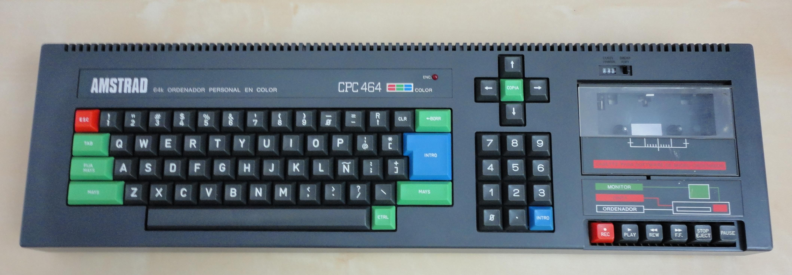
除了主流产品定价更低以外，英国家用电脑使用的存储媒介也与美国不同。在美国，虽然1977年推出的三款家用电脑都采用磁带，但1978年苹果推出Disk II软驱以后，软盘很快就因为更快速的读写、更好的可靠性和更大的容量成为了标准。但对于英国市场来说，磁带可以利用家里现成的录音机进行读写，而且制造成本低廉，因此直到80年代中期都是家用电脑市场的主流。在欧洲市场极为成功的美国产品Commodore 64，也因此需要专门为欧洲市场提供磁带为媒介的软件。
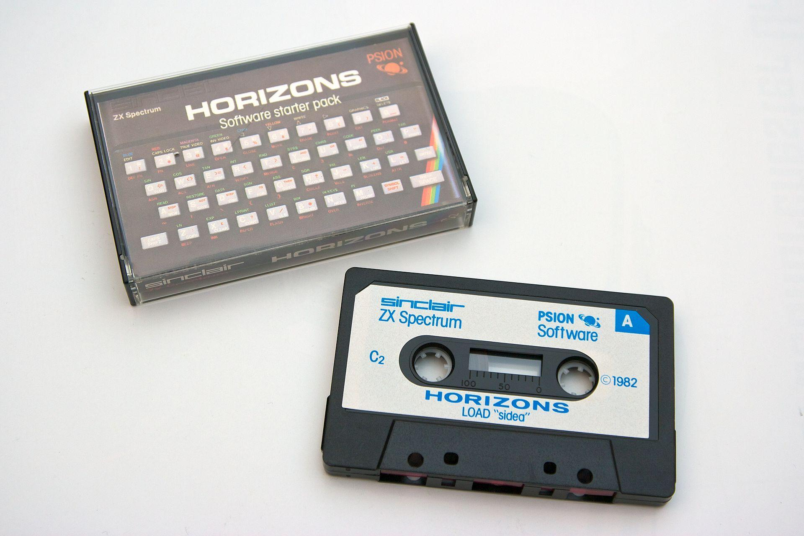
典型的英国家用电脑的应用场景，前方连接了电视（从80年代中期开始，美国的家用电脑也普遍配备更适合静态图像和近距离观看的显示器，而在欧洲这个趋势也更晚），右边则是家用录放机。读写磁带的过程是将模拟的声音信号与数字信号相互转换的过程，类似于早期拨号上网的调制解调器。
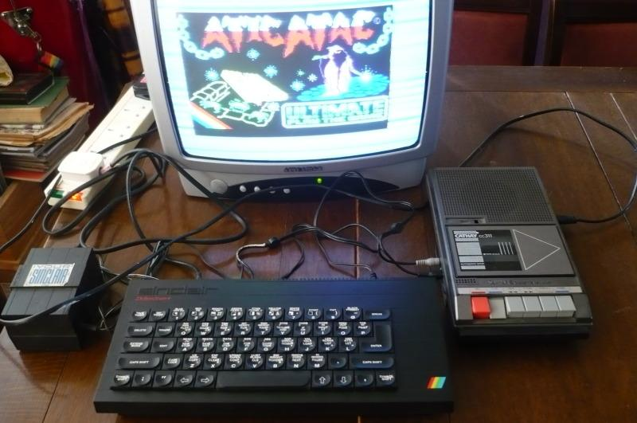
ZX Spectrum还提供了一个硬件外设，Multiface，只要按一个按键就可以将内存的内容存储到磁带中去，这使得很多原本不带存盘功能的游戏都可以存档。
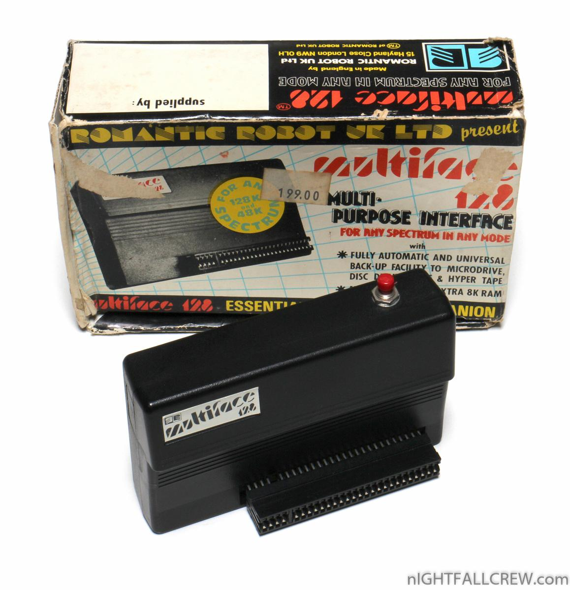
不过，这个设备也使得盗版变得极为容易。因此，很多欧洲软件商都或者采取了特殊的磁带读取机制，或者每份游戏需要输入一个随说明书附送的独特密码。
而更有趣的是，当时在欧洲的软件发行除了磁带，卡盒以及软盘外，还有相当数量的游戏通过杂志和书籍发布。游戏的代码直接被印刷在杂志中，玩家需要自己输入代码进行游戏。
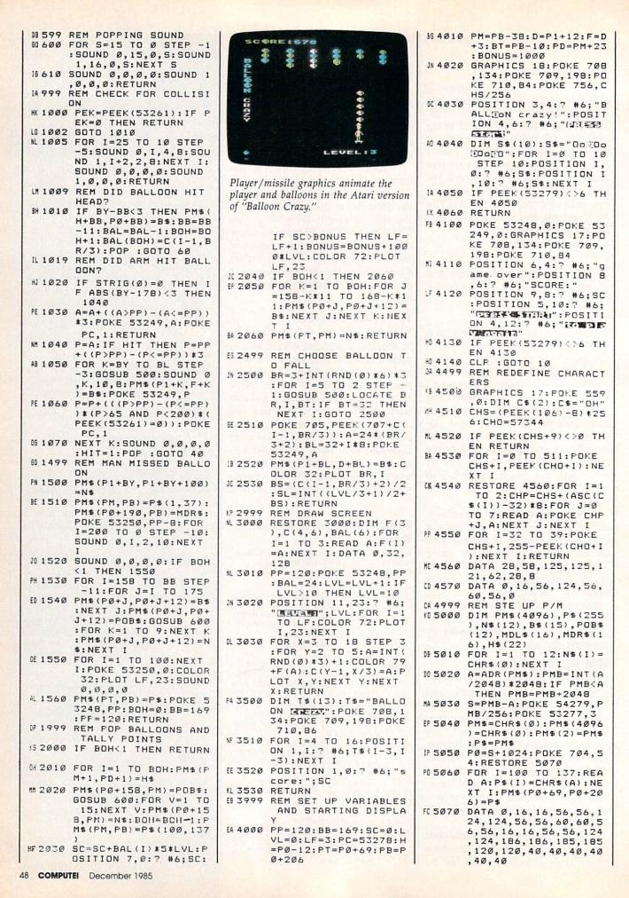
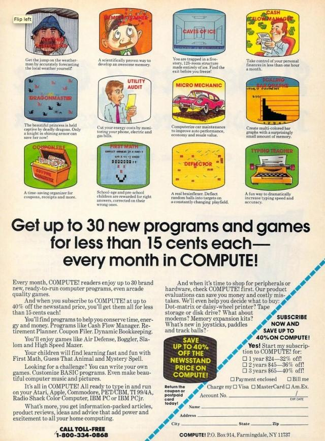
在亚欧大陆另一头的日本，也发展出了独具特色的个人电脑市场。
70年代末和80年代初的日本家用电脑与早期的英国家用电脑很类似，往往只有一个BASIC解释器，销量比较小，不提供什么现成的应用软件，需要用户自行编程，跟十几年前带编程功能的电子词典没有本质区别。但日本家用电脑软件市场的统一既不是借由某几款特别成功的产品，也不是通过标准BIOS接口这样隔绝硬件的平台实现的，而是借由硬件制造标准的统一。而比较有趣的是，这个日本家用电脑标准MSX，是由美国公司微软主导的（当然，实际的领导人是微软日本分部副总裁西和彦，仍然是个日本人），共有14家日本企业参与。
1983年推出的佳能V20是最早的采用MSX的家用电脑之一，它最大的特点是可以连接佳能相机的数码后背。
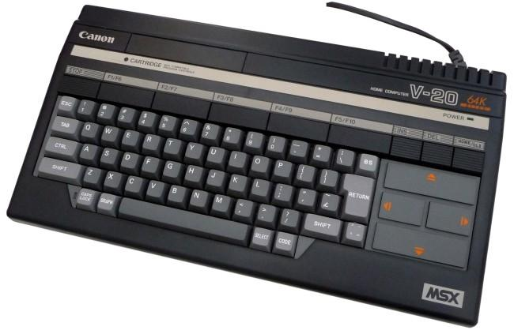
索尼hitbit，售价14.8万日元（合624美元）
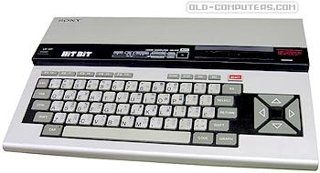
东芝Pasopia，售价12.3万日元（合519美元）
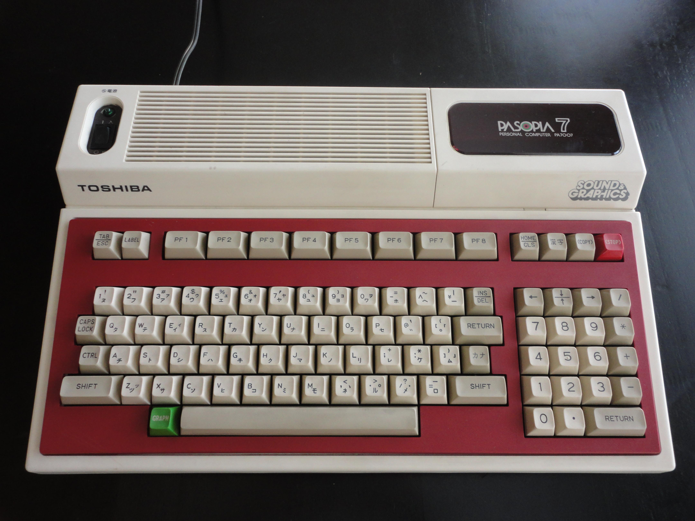
在1980年代中期的日本，虽然任天堂红白机已经面世，但用家用电脑玩游戏仍然是相当流行的选择。事实上，当时MSX标准的电脑主要的功能也就是玩游戏，而像其他主打游戏的家用电脑比如雅达利400/800一样，MSX电脑的主要存储媒介也是跟游戏机一样的卡盒。
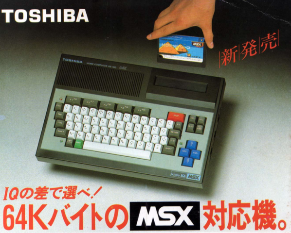
跟英国的家用电脑一样，MSX原本也是没有图形操作系统的，但一些爱好者在2006年为Amstrad CPC和MSX编写了图形操作系统SymbOS，概念类似于GEOS。
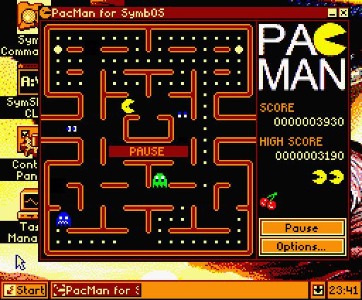
MSX标准的家用电脑仅在日本就售出500万台。后来伴随着日本厂商在国际市场的努力，MSX标准也扩展到韩国，南美、东欧和中东。
夏普巴西分部推出的Hotbit
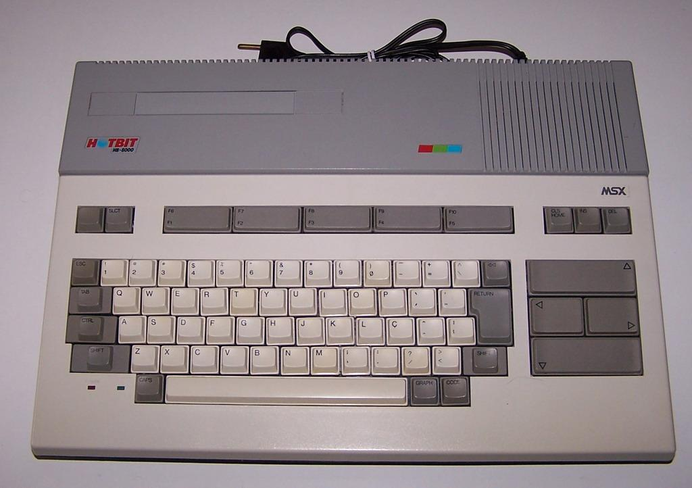
科威特的Sakhr公司基于雅马哈AX120推出的阿拉伯文电脑
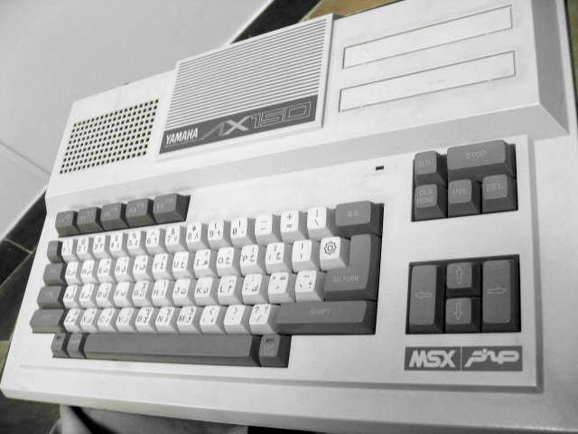
不过，参与MSX的厂商，主要都是计算机领域的中小厂商，当时日本计算机界的龙头老大NEC就没有加入，除了继续更新自己的8位机家用电脑PC-88系列以外，NEC在1982年开辟了与IBM PC竞争的新的高端产品线，PC-98系列，上市售价29.8万日元（合1200美元），采用16位处理器（1988年后升级为32位CPU）。PC-98后来在日本发展成一个巨大的个人电脑系列，一直到1995年前后都可以跟PC和PC兼容机分庭抗礼，只是因为缺乏优秀的图形操作系统，才在Windows 95推出后被完全取代。PC-98推出5年，销量就突破了100万台，到2003年停产为止，一共生产了1800万台。
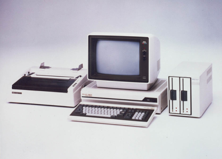
六、家用电脑软件
最后展示一下家用电脑时代的一些软件吧。
1978年为CP/M系统开发的文字处理软件WordStar
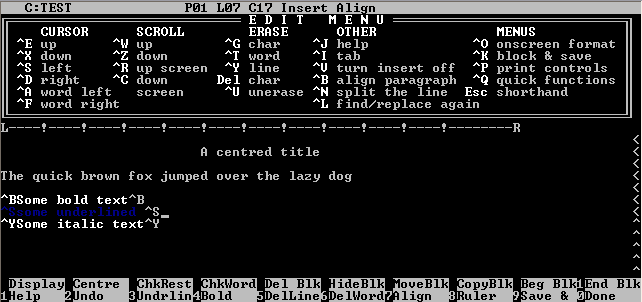
1979年为苹果II开发的办公表格软件VisiCalc，是家用电脑从玩具变成生产力工具的开始。
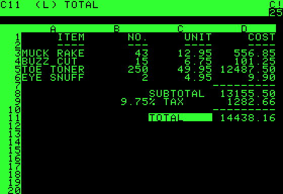
1983年推出的Lotus 1-2-3，IBM PC的杀手级应用，让VisiCalc在一夜之间失去了吸引力。
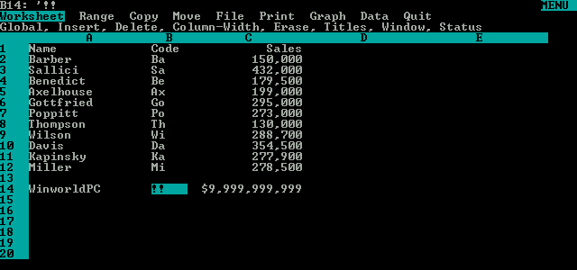
1985年首先推出在Macintosh上的数字出版软件Adobe PageMaker
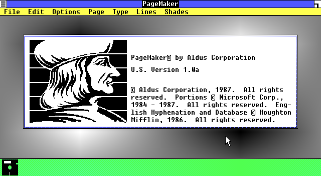
1986年推出的跨平台操作系统GEOS像后来的Windows一样，捆绑了很多办公软件，比如画图软件GEOPaint
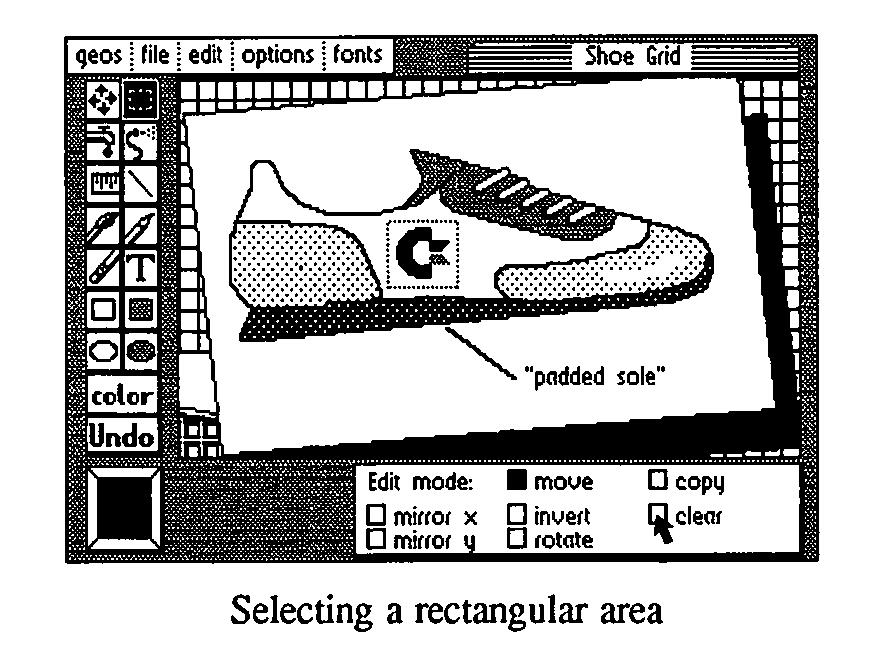
文字处理软件GEOWrite
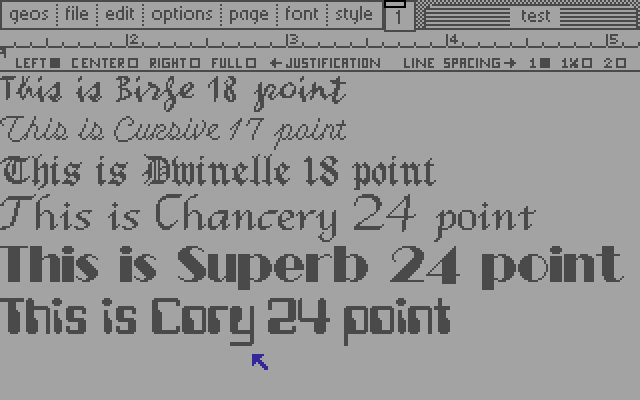
除了办公以外，玩游戏也是当时家用电脑的一个重要用途。在80年代的欧洲，以及1984年任天堂红白机推出前的日本，家用电脑都是最主要的游戏平台。而很多家用电脑比如C64，雅达利400，以及整个MSX系列本身也是以游戏功能作为最大卖点。很多经典系列的电脑游戏都在诞生于家用电脑。
1983年在C64上推出的International Soccer，是现代足球游戏的鼻祖
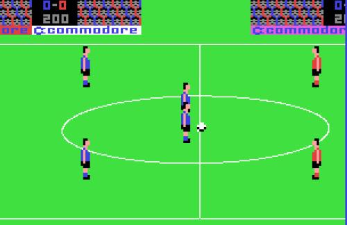
1985年推出的Bard's tale，最早的RPG游戏之一，基于龙与地下城设定变化而来，最早为苹果II开发
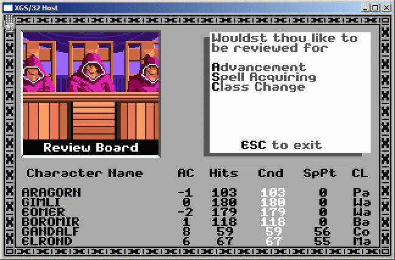
1987年推出的初代潜龙谍影（Metal Gear）是为二代MSX家用电脑开发的
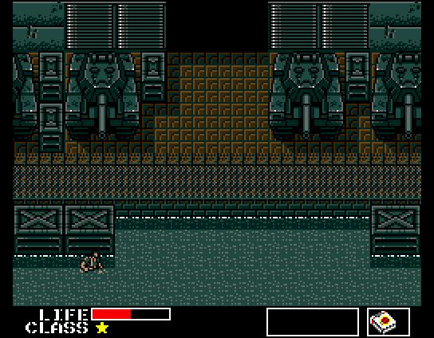
1988年推出的动作冒险游戏Last Ninja 2，
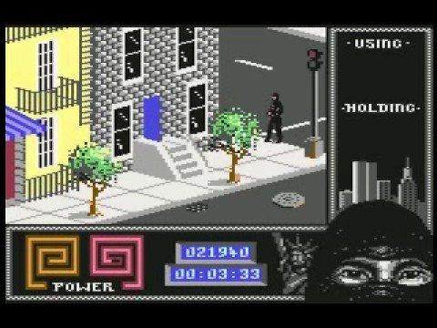
最早的波斯王子是为苹果II开发的，1989年推出
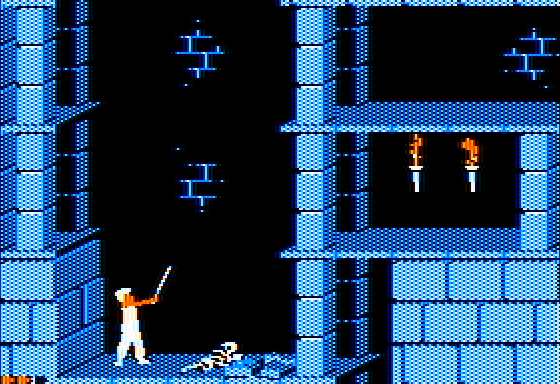
1989年在C64上推出的赛车游戏Stunt Car Racer，很新鲜的采用了第一人称视角。
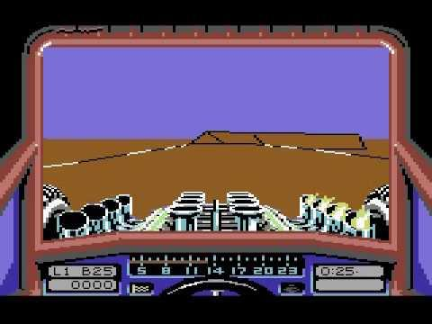
当时游戏的包装
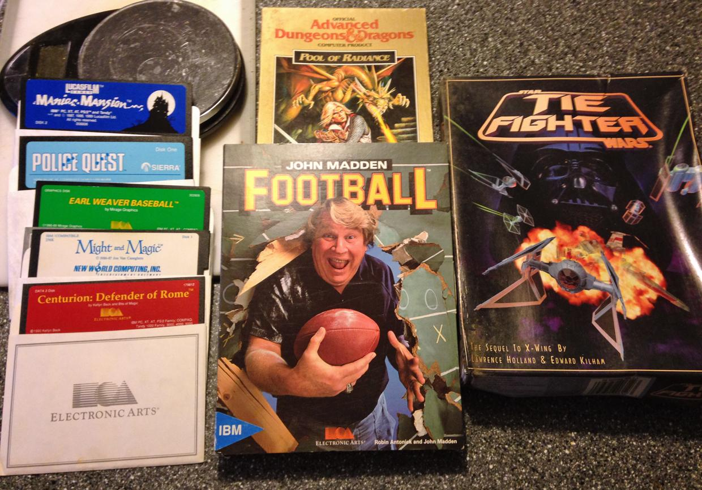
（全文完）
系列文章：